|
|
Lesson Contents | In this Lesson, you will learn how to configure the Form definition for the training sample project. |
In this lesson, we will configure the Form we created in Lesson 3 of this module. We are missing an element we need to configure the form properly, however, so we will need to build it prior to configuring the Form.
In the Properties dialog box of the Dropdown Form control, there is an Items property. You can add the dropdown items manually in this property box by adding one item per line. In the example shown below, each item uses the format "ItemName:Value". In other words, the text to the left of the colon (:) will appear as the text of the control's dropdown list, while the text to the right of the colon will be saved as the value of the control. Using the colon and adding a separate value is optional. If you only enter the item name without a colon and item value, the item name will automatically be saved as the value. This method of item entry is best used for a small list of unique items that will not be used in other forms.
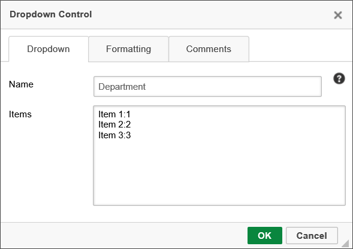
If you wish to fill the list of dropdown items from a database table, you can use the Fill Dropdowns tab of the Form Definition, which enables you to choose the database table, the field to display as the item text, and, optionally, the field to use as the saved value. We will discuss this tab in more detail in a future lesson.
Finally, you can use a Dropdown Object to save and store dropdown Items. This is best used for manually-created lists that can be re-used in other forms. For instance, a list of states might be a common candidate for a Dropdown Object, and, indeed, we will create that dropdown list for the sample Form we are using in this lesson.
Navigate to the root folder of your training project, and create new folder by selecting "Folder" from the Create New… dropdown located at the upper right of the Process Director screen. Name the new folder "Resources".
In the Resources folder, create a Dropdown Object by selecting it from the Create new… dropdown, naming it "Departments", and clicking the OK button to create it. When the Dropdown has been created, click on the Items tab to configure the dropdown items.
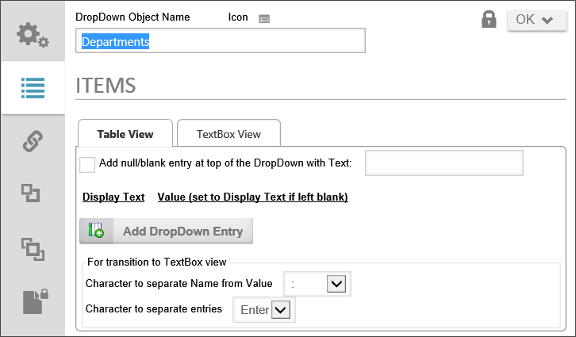
Check the checkbox marked, Add null/blank entry at top of the DropDown with Text: and add the text "[Select One]" in the text box. This will add a placeholder to display the text in the dropdown control when it first loads.
Now, we can begin adding items to the dropdown list by clicking the Add Dropdown Entry button, which adds a new line item to the list.
In the Display Text textbox that appears on the screen, you can now type in the text that will appear in the dropdown control. You also have the option of setting a value to save if the value is different from the display text. In the case of this Dropdown Object, we will not need a value, so we will only be filling out the Display Text fields. Create seven entries in the dropdown, and place the following values in the Display Text field:
When you are done, the Items tab should look like the example below:
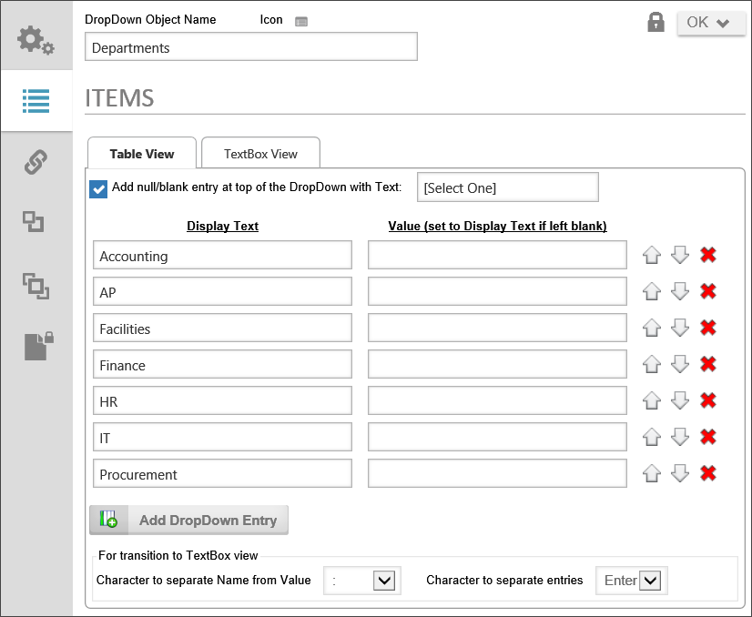
It is best to enter items in a Dropdown Object alphabetically, to make items easier for users to find when making a selection. If you get the item order wrong, you can move items up and down to change the order by using the up or down arrow buttons. You can remove an item from the list by clicking the button marked with the red "X".
Once you have entered the items, click the OK button to save and close the Dropdown Object. We will configure the Department Dropdown control to use this Dropdown object as the source of the dropdown options a little later in this lesson.
In the Skill Exercise for this lesson, you will create an additional Dropdown Object to store the names and values of US states to fill the VendorState dropdown you created on the Form during the Skill Exercise in Lesson 3 of this module.
Now, let's return to the Form we created in Lesson 3 of this module, and begin configuring the Form definition. In the Form definition, there are four configuration tabs we will work with. We will start with the Form Properties tab.
One important option to address is what the name of each Form instance will be named when users submit their purchase requests, which is configured in the Instantiated Form Name property. You'll notice that there is already a generic name for the Form, but the generic name usually doesn't give us enough information, as users, to really know which form instance is which. So, it's a best practice to give the Instantiated Form Name property a custom format that makes it a bit easier for us to look over a list of form instances, and tell which instance we might like to open. In this case, we'll use this as the naming format:
{FORM_DEF_NAME} #{:PRNumber}, Submitter: {TIMELINE_INITIATOR}, Vendor: {:VendorName}
With this format, each instance of the Form will show us the PR Number, Submitter, and vendor for the PR.
Another good practice is to disable Form fields when data entry is not required, in order to prevent unwanted or inadvertent changes from being made as the form proceeds through its approval process. To do this, we'll change the Form Fields are Enabled by Default dropdown to "Form fields are enabled only when…" When we make this change, we can set the conditions under which the form field is enabled by using Process Director's Condition Builder.
A condition refers to an existing state of some data or activity. Conditions are usually true or false statements that are evaluated in order to determine an appropriate response. On this Form, we only want the fields to be editable when a new form instance is created, so that only the request initiator can edit the form. The Condition Builder enables us to set a condition to test whether the Form instance is a new instance.
Click on the Click to create condition… link to open the Conditions For dialog box, where we will add the condition that must apply to enable the Form's controls.
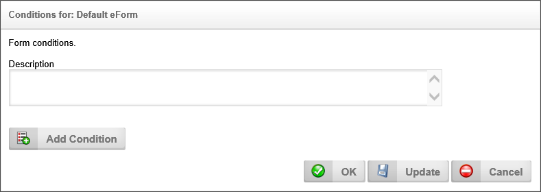
Click the Add Condition button to add a condition section to the dialog box. The first control in the condition is a picker control that will most likely have “Form Field” displayed in the textbox portion of the control.
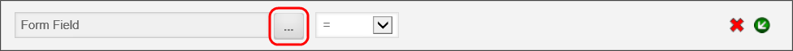
We need to change this, so click on the picker control’s Build button to open the Choose System Variable dialog box.
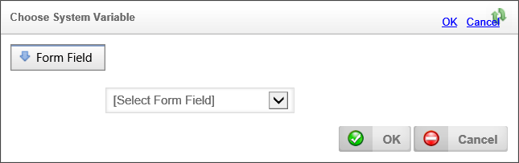
At the top of the dialog box is a dropdown menu that is labeled “Form Field”. Click on this dropdown menu and select the Form >> New Form Instance? menu item. This will instruct Process Director to check if the form is being created for the first time. Click the OK button to close the Choose System Variable dialog box, which will return you to the conditions dialog box for the control.
The picker control for the condition should now be labeled “New Form Instance?”. Set the remainder of the condition to “=” and “Yes” using the dropdown controls, so that the final condition looks like the condition shown below.
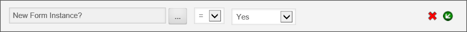
We only have one condition to apply to this property, so we are done setting conditions for the current property, but it is possible to apply multiple conditions at any time. When using multiple conditions, there are two types of conditions to choose from: [OR] conditions and [AND] conditions. [OR] conditions evaluate to true if any condition is met. [AND] conditions only evaluate to true only if all conditions are met.
You can add an [AND] condition by clicking the Insert an [AND] Condition button located on the left side of an existing condition.
You can insert an [OR] condition by clicking the Add Condition button.
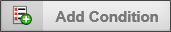
Since we do not, in this case, need to set any additional conditions, click the OK button to close the dialog box to return to the Form definition. The Form Properties tab should now look similar to the example below.
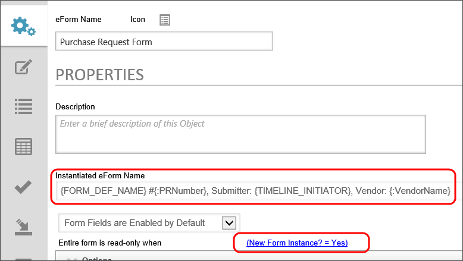
If the Options section of the Properties tab is not open, click on the section control to open it. A variety of options are displayed in this section as check boxes.
| OPTION | DESCRIPTION |
|---|---|
| Display validation errors with alert boxes | The default display method for Process Director to display validation errors is to show warning banners at the top and bottom of the Form page. Checking this option will display validation errors in an alert box. |
| Do not show this object in 'Items I Can Run' Knowledge Views | Checking this option will remove the Form from Process Director's standard Items I Can Run knowledge view. |
| Use Visual Basic for scripts (leave unchecked for C#) | This option enables the use of Visual Basic.NET as a scripting language, rather than C#, which is the default language. |
| Audit Form field changes | Checking this option will enable the storage of history on all Form field changes. |
| Enable Form Locking | Enables the form to be locked when a user edits the form, preventing other users from performing any edits until the original user closes the form. |
| Display warning if user Cancels form changes | Enables a confirmation box to prevent inadvertent canceling of changes to the form. |
| Show disabled fields as text | Rather than displaying disabled controls as grayed-out control objects, checking this option will display only the text stored in Form fields. The controls will not be displayed. |
| Show only the first validation error (instead of all) | If there are multiple validation errors, checking this option will display only the first validation error, rather than multiple errors. |
| Hide disabled buttons | Checking the options will prevent any disabled buttons from being displayed to Form users. |
Of all the options listed above, we only need to check the Show disabled fields as text option. As a best practice, disabled fields should be shown as text, absent a compelling reason to show the actual disabled control.
The Form Controls tab is where all changes to Form field properties are made. Just as every Form control has a properties dialog box that can be displayed in the editor, every Form field created from those controls has a properties dialog box that is accessed from the Form Options tab.
As mentioned previously, you can open the properties dialog box for each field by clicking on either the Edit link or the field name.
The first field to edit is the ArrayItems field. Array fields, like most fields, have a value, which is the number of rows in the array. As a default, when the Form is opened, there are no rows, which means the value of the array is "0". A best practice is to ensure that, if an array has to contain at least one row for the form to be valid, that at least one row is displayed on the page when the Form is opened. To display the first row of an array, the default value must be set to "1".
Open the properties dialog box for the ArrayItems field, and change the default value type to "Number" by selecting it from the dropdown menu, then typing "1" in the text box that appears adjacent to the menu.
Change the Set Required Options dropdown to "Field is Required". Since there can be no valid purchase request that lists no items to purchase, we want to ensure that the fields in this array are filled out.
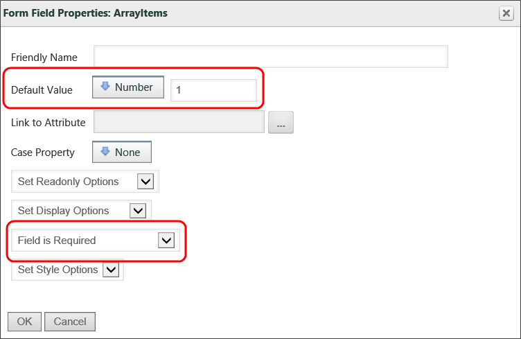
Click the OK button to close the dialog box.
Now, even though you've made the change in the dialog box, Process Director does not save this configuration change until you save the Form definition by clicking the OK or one of the Update options at the top right of the screen. You'll want to do this frequently, to ensure that you don't lose your configuration changes if something untoward happens.
Notice that, now that we've made some configuration changes to the ArrayItems Field, some new icons are now displayed in the Properties column of the Form Controls tab. These icons denote various changes to the field properties, and you can quickly see the changes by placing your mouse cursor over the icons, which will cause a tooltip to display, showing you a brief text description.
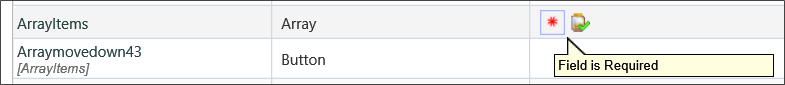
Now we'll turn our attention to the Department dropdown. In the last section, we configured the Dropdown object that will fill the options for this control, and now we need to associate that Dropdown object with the field. Open the Properties dialog box for the Department field. Dropdown controls have a property named Link to DropDown object that is used to specify the dropdown object that will provide the appropriate options for the control, when the form runs.
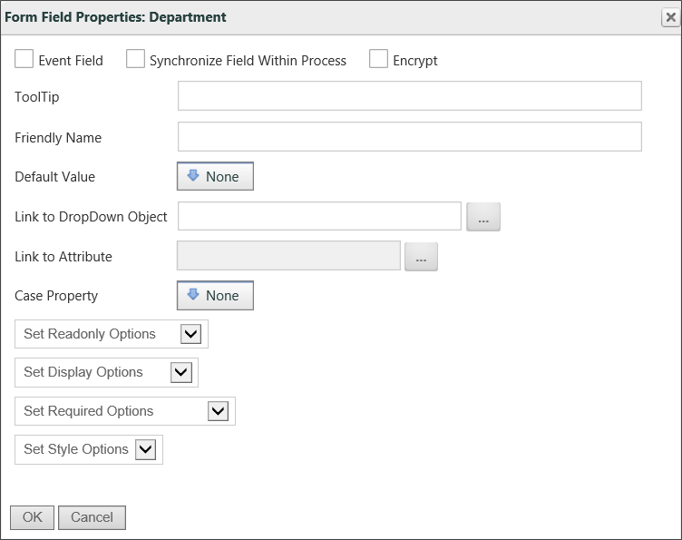
Click on the Build button adjacent to this property's Object Picker, to open the Choose Dropdown dialog box. In the dialog box, navigate to the Resources folder and click on the Departments Dropdown object we created earlier. When you do so, the dialog box will close, and the Departments dropdown will be associated with the Department field. Click the OK button to close the Properties dialog box for the Department field. When we run the form, we will now see all of the appropriate options displayed in the dropdown portion of the control.
The next field to edit is the CommentLog field. Open the Properties dialog box for the CommentLog field. The first property we want to change is the Friendly Name property. By default, Process Director will display the actual field name for fields that are displayed as columns in Knowledge Views. Of course, since field names cannot use spaces or special characters, or may have other naming convention oddities, we may want to display a more understandable name for the field when it is displayed for users. In this case, enter the text "Comment Log" in the Friendly Name property.
Next, we want to make a change to how this field is displayed on the form. If you'll remember, we set the default options for the Form to disable the form fields after the form is submitted, to prevent later users from altering the purchase request. At the same time, we want to ensure that process users have the ability to make comments about the request, which cannot be done if the CommentLog field is hidden or disabled.
In effect, we have a conflict between disabling the form fields, and still allowing users to make additions to the comment log. If you'll remember from Lesson 2 of Module 2, you learned that Forms are containers for controls, and that some controls, such as Section controls, are, in turn, containers for controls as well. Process Director resolves conflicts between enable/disable rules by ensuring that the enabled/disabled condition of the control at the lowest level of the document hierarchy wins.

So, in the normal course of events, if a Section control is set as disabled, all of the individual controls in the section will automatically be disabled as well. But, if a Section control is set as disabled, and an Input control inside the section is set as enabled, the Input control will win that conflict, and will be enabled, even though the parent Section control is set as disabled. All of the other individual controls in the section will be disabled, but the control with the conflicting rule will be enabled. The rule at the lowest level of the document hierarchy always wins.
In the case of the CommentLog field, set the Set Enabled Options to "Field is Enabled", and the Set Visibility Options to "Field is Visible". Now, even though all of the remaining form fields are disabled, the comment log will be enabled, allowing users to make comments at any point in the process. Click the OK button to close the Properties dialog box.
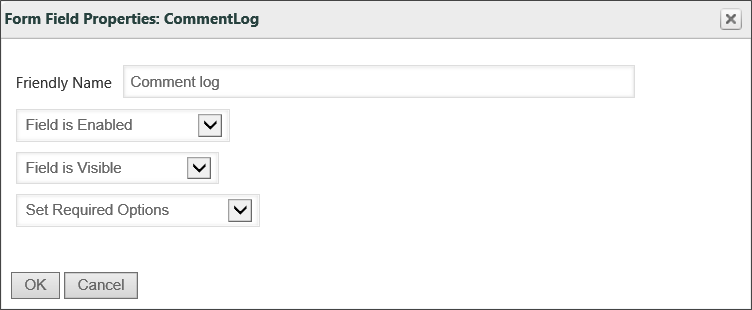
We can follow the same procedure we just used to set properties for the previous two fields to set some properties in the remainder of the Form fields.
Set the Friendly Name property to "Unit Price".
Set the Data Type property to "Currency".
Set the Friendly Name property to "PR Number".
Set the Event Field property to checked. Many Form fields can be event fields. An Event Field is a field that, when a user exits the field after editing it, will cause a Process Director event to fire. The event is then often used to start a Custom Task. In the case of the Purchase Request Form, firing the event will cause the Calculation control to recalculate the cost of the items contained in the array.
Set the ToolTip property to "Enter the quantity of items to be purchased." Tool tips appear when you move your mouse over a control. The best practice for tool tip usage is to provide simple instructions for filling out the field.
Set the Set Readonly Options property to "Field is Enabled When…", then use the Condition Builder to create the condition, "New Form Instance? = No".
Set the Set Display Options property to "Field is Visible When…", then use the Condition Builder to create the condition, "New Form Instance? = No".
Setting these two options will hide and disable the approver's comments when the form is initially created, and no approver comments are needed.
Set the Set Readonly Options property to "Field is Enabled When…", then use the Condition Builder to create the condition, "New Form Instance? = Yes". We want to disable this section during the approval process so that the purchase items can't be changed after the PR is submitted.
Set the Set Display Options property to "Field is Hidden When…", then use the Condition Builder to create the condition, "New Form Instance? = Yes". We want to hide the routing slip initially, as it is not needed before the process is initiated.
Set the Set Display Options property to "Field is Hidden When…", then use the Condition Builder to create the condition, "New Form Instance? = No". This section will be disabled once the PR is submitted, as we do not want process participants to change it.
Set the ToolTip property to "Enter the SKU for this item".
Set the Friendly Name property to "Submit Date".
Set the Default Value property to "Form Submit Date".
Set the Set Readonly Options property to "Field is Disabled". This is an autogenerated date, so there is no reason for this field to be enabled.
Set the Default Value property to "Form Submit User".
Set the Set Readonly Options property to "Field is Disabled". This is an autogenerated user field, so there is no reason for this field to be enabled.
Set the Event Field property to Checked. Once again, we want to ensure that a change to this field recalculates the ItemPrice value.
Set the ToolTip property to "Enter the price for 1 unit of the Item".
Set the Friendly Name property to "Unit Price".
Set the Data Type property to "Currency".
Set the ToolTip property to "Enter the first line of Vendor's address".
Set the Friendly Name property to "Vendor Address First Line".
Set the ToolTip property to "Enter the second line of Vendor's address, if applicable".
Set the Friendly Name property to "Vendor Address Second Line".
Set the ToolTip property to "Enter the Vendor's city".
Set the Friendly Name property to "Vendor City".
Set the ToolTip property to "Enter the name of the POC for the Vendor".
Set the Friendly Name property to "Vendor Contact".
Set the ToolTip property to "Enter the name of the Vendor".
Set the Friendly Name property to "Vendor Name".
Set the ToolTip property to "Enter the abbreviation for the Vendor's state or province".
Set the Friendly Name property to "Vendor State".
Set the ToolTip property to "Enter the Vendor's Zip Code".
Set the Friendly Name property property to "Vendor Zip".
Once you have set the properties described above, click the OK or Update menu items to save your changes to the Form definition.
Process Director supports the ability to package unique business logic in Custom Tasks that can be mapped to Form events (e.g. buttons) or used in processes as tasks. This allows custom logic to be developed once with the scripting interfaces and re-used across many Form definitions and Process Timeline definitions without any additional scripting. BP Logix has created a basic package of Custom Tasks that can be imported into your Process Director installation.
Prior to Process Director v3.82, this tab was most often used to set the value of form fields using the Set Form Data Custom task, or to fill dropdown options from a database using one of the Fill Dropdowns custom tasks. Both of those functions have now been given dedicated tabs on the Form definition. As a result, Custom Tasks are now used for more complex operations that go beyond the scope of this training course. We will, however, briefly cover how to add and configure a custom task, and map it to an event.
At the top of the Custom Task Event Mapping tab, there is an Object Picker control you can use to select the Custom Task you desire. Clicking the Object Picker's build button will open a dialog box that lists the Custom Tasks installed on your instance of Process Director.
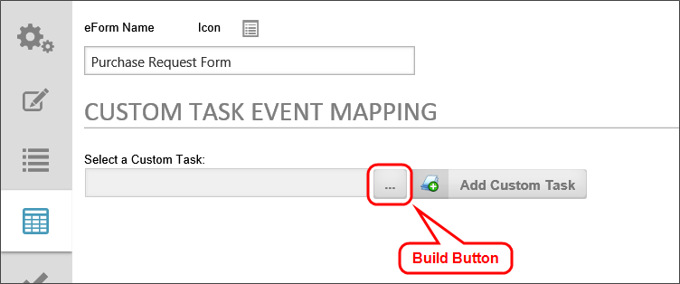
The Choose Custom Task dialog box lists the Custom tasks organized by the task type. You can search for the custom task you want by expanding the node for each task type, then clicking on the desired Custom Task.
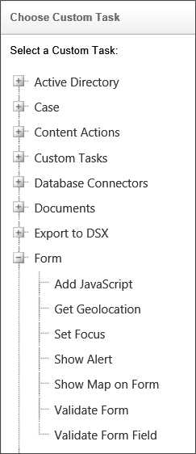
When you select the Custom Task, the Choose Custom Task dialog box will close and the name of the Custom Task will appear in the text box of the Object Picker. Click the Add Custom Task button to add the Custom Task to the Form. For the purpose of this demonstration, we will choose the Show Alert Custom task displayed above.
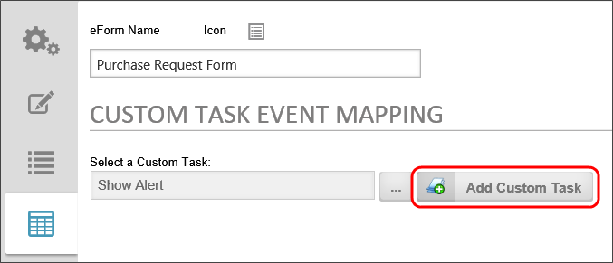
When you click the Add Custom Task button, the Custom Task Event Mapping tab will now display a new line containing the Custom Task to be configured.
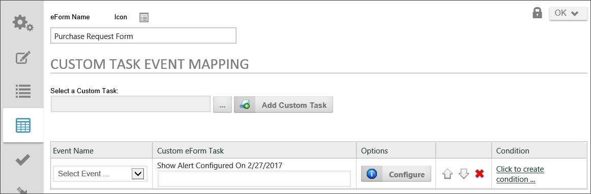
From the dropdown in the Event Name column, select the event on which you'd like to run the Custom Task. The event dropdown will display all of the built-in process director events in square brackets, while all of the Form control events you created will be displayed in plain text.
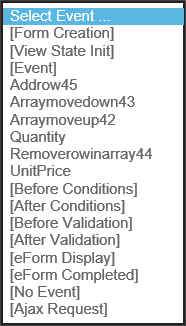
In the Custom Form Task column, there is an Input box you can use to enter a brief description of the Custom Task's purpose.
Next, we need to configure the Custom Task by clicking on the Configure button to open the configuration dialog box for the Custom Task. Each Custom task has a unique configuration dialog box. You must configure all of the required options for each Custom task to ensure that the Custom Task works properly. Once you have configured the properties for the custom task, click the OK button to save the settings and close the dialog box.
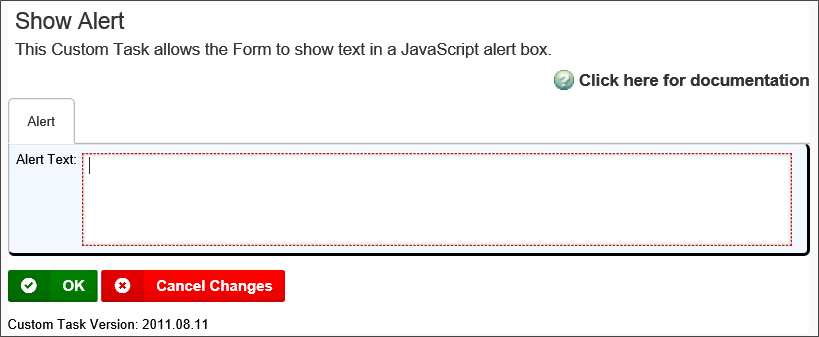
Note that, at the bottom of the dialog box for each Custom Task, there is a Custom Task Version listed. BP Logix updates Custom Tasks on a regular basis, so you will need to check the BP Logix support web site on a regular basis to see if a new Custom task package has been released. The new releases usually offer new functionality to the Custom Tasks.
Custom tasks run in the top-to-bottom order in which they appear on this tab, i.e., if you have four tasks that run on the [Display] event, they will run in the order shown on this tab. You can change the order by clicking on the up or down arrow buttons, and you can delete a task completes by clicking on the button marked with the large red "X".
Finally, you can set additional conditions to evaluate before the Custom Tasks run by clicking on the Condition Builder link. If you create a condition, the Custom Task will only run when that condition evaluates as True.
The Set Form Data tab enables you to set the value of a form field when a specified even occurs. In the case of our sample form, we want to set the value of the Purchase Request number. To set the form data for our desired field, first select the [View State Init] event from the Select Event dropdown, then click the Add Action button. A new [View State Init] section will appear on the page.
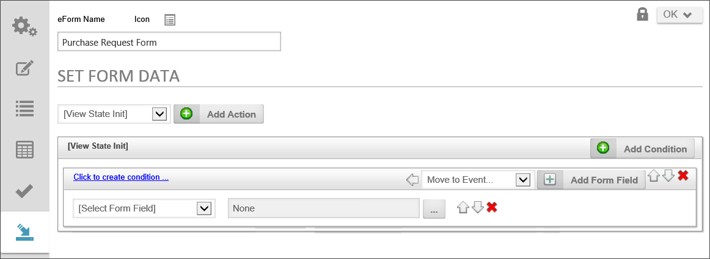
From the Select Form Field dropdown, select the PRNumber field. Next, click on the Build button for the Object Picker to open the Choose System Variable dialog box.
We want to set a text value for this field, so, from the dropdown menu in the Choose System Variable dialog box, select the Value >> String menu items. The Dialog box will change to show an Input box to hold the value we want to display.
Yype the following value into the Input box:
PR{SEQ_NUM:PR, digits=4}
Process Director has a System Variable for Sequence Numbers (SEQ_NUM) that generates a unique, incrementing number for every object created by the system. There are, in fact, a large number of System Variables in process Director, and you can see the full list by perusing the System Variables Reference Guide. All System variables in process Director are identified by placing them in curly brackets ({}). Any time process Director sees curly brackets, the system will attempt to parse the text inside the brackets as a System Variable. As a result, you should keep in mind that curly brackets are special, reserved characters in Process Director, so you generally shouldn't use them unless you are trying to address a System Variable.
In the case of our sample Form, we have used the Sequence Number system variable to create purchase request numbers, and we have specified a specific format for the PR Number. So, let's look at the value we've just typed into the the Input box. First, to identify the sequence number as a purchase request number, we started with the prefix "PR". Every PR Number generated by the system will now start with the letters "PR". You can generate unique sequence numbers for different types of objects by assigning each object a unique group name. In the case of the SEQ_NUM variable we've just used, we have assigned a group name called "PR" by adding it after the colon (SEQ_NUM:PR). Next, we've specified the number of digits the sequence number will generate (digits=4).
As a result of the formatting we've used for the PR Number, the first PR number generated by the system will be "PR0001".
Click the OK button at the bottom of the Choose System Variable dialog box to save your configuration changes and close the dialog box.
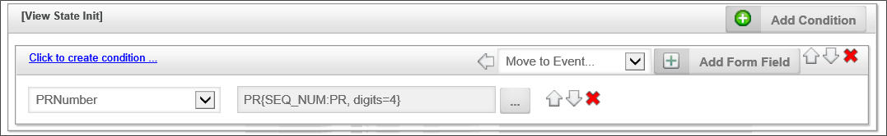
There are, by the way, some other actions we could take for setting the Form data. There is a link to the Condition Builder to impose an additional condition that will determine when the form field is set. We could also move the Set Form Data action to a different event. We will not go through those function at this point, as we have now completed the configuration changes that we need to make to the Purchase Request Form.